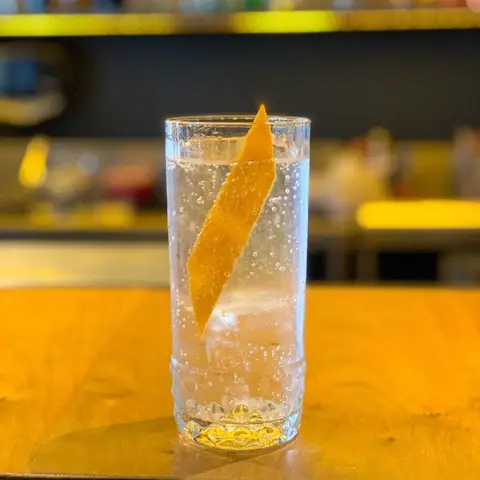

Whisky Sour
1929R$ 39
- 60ml Gentleman Jack
- 25ml Limão taiti
- 20ml Xarope simples
- 20ml Clara de ovo pasteurizada
DoceAmargo
Digite ao menos 2 letras.
208 fichas do Banco de Cocktails do Notion, separadas por categoria — autorais, clássicos, produções, sucos, mocktails e pré-batcheds. Os cocktails do top 2/3 de vendas de cada casa vêm primeiro na sua categoria, com ficha completa. Toque numa ficha para ver o detalhe. 3 itens do top ainda sem ficha cadastrada (marcados com ).


IZn`t Feeling blue, Roxo





Bobby Burn, Clover Club, Creole Cocktail, Dirty Collins, Fotos Gra, Gin Basil Smash, Guarnição: Moeda de laranja bahia, Limoncello Spritz, Negroni Sbagliato, Old Fashioned, Old Pal, Paper Plane., Pirlo, Pornstar Martini, Sgroppino, Tuxedo (N?)
Café coado, Café Espresso, Café expresso, Calda de Agave, Chá frutas, Chá roiboos, Coado, Espuma de manga, Moeda de Beterraba, Moruno
Limonada de Toranja, Suco Cranberry, Suco de laranja, Romã e Beterraba, Suco de Mirtilo, Suco Framboesa e Melão Cantaloupe


1, 2 - Mock longdrink, 3- Mocktail Sour, 4, Coco e Mango, Maybe Sour - Mocktail, Morango e coco sour
Sem ficha técnica cadastrada no Notion — este item só existe como linha de venda. Confirme o preparo com a coordenação antes de treinar.
Sem ficha técnica cadastrada no Notion — este item só existe como linha de venda. Confirme o preparo com a coordenação antes de treinar.


a, Calculadora PB, PB - Fitzgerald (Uyra), PB - Little Italy
Sem ficha técnica cadastrada no Notion — este item só existe como linha de venda. Confirme o preparo com a coordenação antes de treinar.
| Cocktail | Categoria | Casas | Venda |
|---|
Achou um erro ou uma ficha desatualizada? avise o Rodrigo no WhatsApp.
Portal dos Bares · Grupo IZ · atualizado em 11/07/2026. Gerado automaticamente por portal_gen.py — não editar este arquivo à mão.